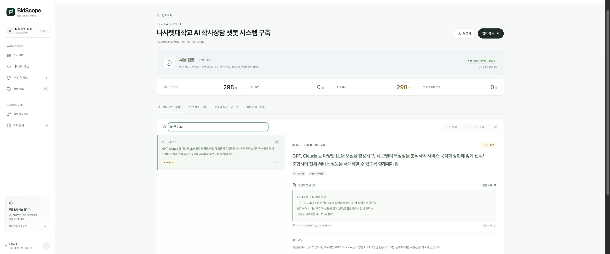

01 왜 만들었나 WHY
나라장터 입찰에 참여하려면 먼저 맞는 공고를 찾고, 공고문과 제안요청서(RFP)를 내려받아 읽고, 참가 자격·유사 사업 실적·세부 기능·보안 조건·일정과 계약 책임을 확인해야 합니다. 그다음에야 제안서를 쓰기 시작할 수 있습니다. 제안요청서는 수십 쪽에서 100쪽이 넘고, 조건은 문서 곳곳에 흩어져 있습니다.
담당자는 문서를 읽고 조건을 옮겨 적은 뒤, 회사의 실적·인력·기술 자료를 다시 찾아 대조합니다. 관심 공고가 늘수록 이 준비 작업이 그대로 반복되어, 제안서를 쓰기도 전에 시간이 많이 듭니다.
이 불편을 줄이려고 만들었습니다. AI 에이전트가 회사에 맞는 공고를 고르고 제안서 초안까지 미리 준비해 준다면 담당자의 시간이 크게 줄어듭니다. 그 첫 단계로 제안서를 쓰기 전, 참여를 검토하는 단계부터 만들었습니다.
예상 효과(추정) 50~100쪽 제안요청서 한 건을 읽고 조건을 정리해 회사 자료와 대조하는 데 5~7시간이 걸린다고 가정했습니다. 에이전트가 요구사항과 근거를 먼저 정리하고 담당자는 인용 원문과 증빙만 확인하면 1~2시간으로 줄어, 한 건당 4~5시간(약 70%)을 아낄 수 있다고 봅니다. 실제로 측정한 값이 아니라 제가 가정한 수치입니다.
02 결정 DECISION
문서를 통째로 모델에 넣지 않았습니다
공고 PDF를 페이지 단위로 나누고, 뽑아낸 요구사항마다 원문 인용과 물리 페이지를 붙였습니다. 인용이 원문 문자 범위와 정확히 맞는지는 코드가 검사합니다. 글자나 숫자가 바뀐 인용은 통과시키지 않습니다.

분야별 에이전트 넷으로 나눴습니다
자격, 기술, 인력·일정, 사업조건 에이전트가 각자 회사 근거를 찾아 비교합니다. 최대 4개가 병렬로 돌고, 모델 호출 횟수와 입력 분량 예산을 함께 씁니다.
근거가 없으면 판단하지 않습니다
회사 자료로 뒷받침되지 않는 항목은 ‘알 수 없음’과 확인할 질문으로 남깁니다. 참여 여부는 담당자가 원문과 증빙을 보고 결정합니다.
비용 없이도 재현되게 했습니다
규칙 기반 시험 대역으로 수집부터 검증·저장까지 파이프라인을 재현하고, 실제 분석은 Mistral AI(JSON Schema 출력)나 로컬 Ollama 모델로 실행합니다.
03 구조 ARCHITECTURE
나라장터에서 공고와 첨부 PDF를 받아 오거나 PDF를 올리면, 페이지 청크 → 요구사항 추출 → 분야별 에이전트 4종 → 인용·근거 검증 → 보고서 저장이 FastAPI 서버의 검토 작업 큐에서 차례로 처리됩니다. 결론은 모델 요약이 아니라 결과 검사 규칙이 정하고, 같은 요청은 SQLite 검토대장에 저장된 결과를 다시 씁니다.
04 결과 RESULT
2026.10.19 기록 기준으로 실제 나라장터 공고들로 시험했습니다. 104쪽 제안요청서는 104쪽 모두 원문 문자 범위와 정확히 맞는 청크로 나눴습니다. 41쪽 제안요청서에는 Mistral AI를 사용해 요구사항 298개를 원문 위치와 함께 뽑았습니다(위치 일치 298/298).
05 확인 자료 EVIDENCE
- 기술
- Python 3.12 · FastAPI · React 19 · TypeScript · Mistral AI · Ollama · SQLite